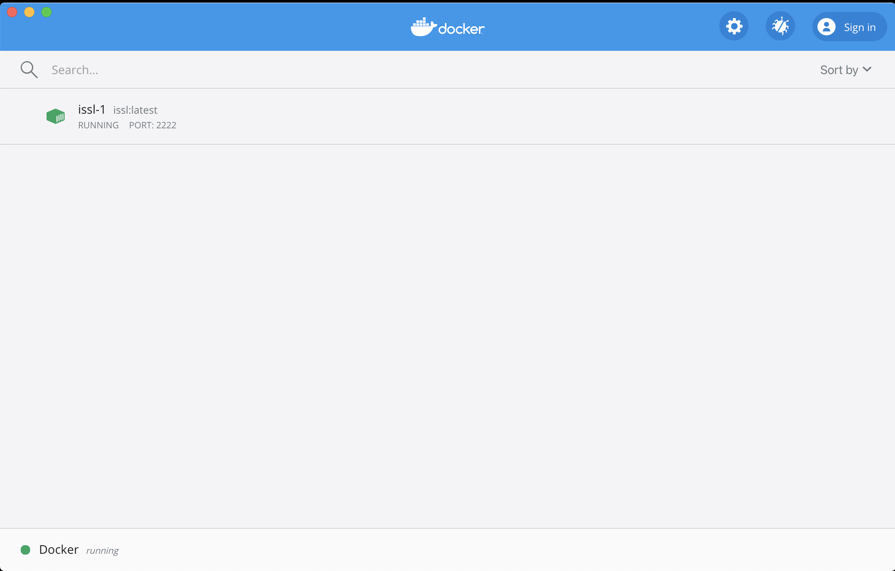
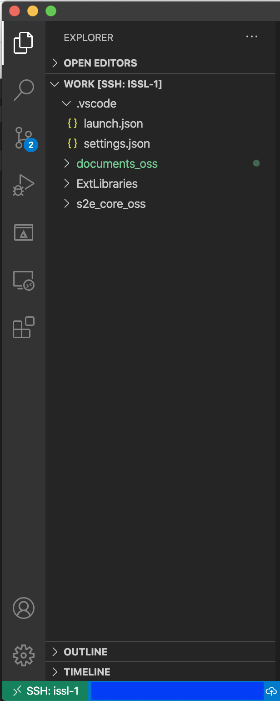

How to compile with Ubuntu in Docker
1. Overview
- Docker is useful for the easy setup of the compile environment for S2E.
- Both Windows and Mac users can use the same environment and get the same result by using the docker container.
- We selected Ubuntu as an OS in the docker image and GCC/G++ as a compiler for S2E.
Note: We currently use a 32bit compiler for S2E since flight S/Ws are usually executed on a 32bit microcomputers. - We recommend using Visual Studio Code as an editor for the environment.
- This document explains a setup sequence of the docker environment for S2E.
- Note: For a detailed explanation of Docker and VSCode's Extensions, please see the latest and official information.
2. Install Required Application
2.1. Docker
- Go to the install web page of Docker.
- Install
Docker for WindowsorDocker for Macto suit your platform.
2.2. Visual Studio Code (VS Code)
- Go install web page of VS Code.
- Install
Visual Studio Codeto suit your platform. - Install following extensions
- Remote-SSH
- CMake
- CMake Tools
- C/C++
- Following extensions are also useful
- Code Spell Checker
2.3. For Mac users
- Install the
coreutilsto use therealpathcommand insetup_docker.sh- Use the
brew install coreutilscommand when you haveHomebrew
- Use the
3. A Sequence of environment setting
3.1. Working directory setting
- Create a
workdirectory as a working directory. - Clone s2e-core in the
workdirectory. - Add the
workdirectory in thefile sharingdirectory of Docker.- Note: This setting does not exist in the latest Docker and WSL2 environments in Windows, so it is not necessary.
3.2. Make Docker image and container
- Launch
git bash(for windows users) orterminal(for Mac users) - Move
/s2e-core/scripts/Docker_Ubuntudirectory - Edit
Dockerfileorsetup_docker.shwhen you want to change the directory name, the user name of the container, and other settings. - Execute
./setup_docker.sh buildto make images - Check created images (
issl(andubuntu))- command:
docker images
- command:
- Execute
./setup_docker.sh run_coreto make the container - Check created container (
issl:latest)- command:
docker ps -a
- command:
- Check the dashboard of Docker as follows.
3.3. SSH connects with VS Code
- Launch
VS Codeand open a new window. - Click the
Remote Explorericon on the left side.- Note: the icon looks like a monitor
- Click the
gearicon ofSSH TARGETSand select the config file you want to edit- Default:
C:\Users\UserName\ssh\configorUser/UserName/ssh/config
- Default:
- Edit the config file as follows
Host issl-1 HostName localhost User s2e Port 2222 - Save the config file and check a new SSH target
issl-1is made in the explorer - Click
Connect to Host in New Windowicon on right side ofissl-1 - Enter the password
s2ewhen required - See left bottom icon
SSH:issl-1to confirm the connection - Open the
workdirectory in the container by usingOpen folder
3.4. Download External Libraries
Note : This sequence was integrated within the docker build process, so this is currently unnecessary.
- S2E has several script files to get external libraries.
- For this ubuntu/docker platform, users should use script files in
scripts/Commondirectory andscripts/Docker_Ubuntudirectory. - Users can execute most of the script files with
git bashorterminalin the outside of the container, but users should executescripts/Common/download_nrlmsise00_src_and_table.shinside the container to use the same compiler. - Click
Terminal > New terminalin the menu bar of VS Code. - Select
bashterminal at the bottom window. - Execute
./s2e-core/scripts/Common/download_nrlmsise00_src_and_table.sh. - See
ExtLibrariesto confirm the NRLMSISE library is generated.
3.5. Build S2E
- Install the following extensions in the
issl-1 SSH connection
Even if the extensions were already installed in local VS code, you also need to install them in theSSH connection.- C/C++
- CMake
- CMake Tools
Note : You need to reload VS Code after installing new extensions
- Edit setting of
CMake Toolsinissl-1Cmake Build Directory: ${workspaceFolder}/s2e-core/build/Debug - After
CMakeandCMake Toolsare installed, VS Code requires you to configure the building environment withCMakeList.txt. Please selectyes. However, there is noCMakeList.txtfile in theworkdirectory, and VS Code requires you to locateCMakeList.txt, so please select theCMakeList.txtfile ins2e-coredirectory.- This setting is written in
.vscode/settings.json - You can directly edit the
settings.jsonas follows{ "cmake.sourceDirectory": "${workspaceFolder}/s2e-core", "cmake.buildDirectory": "${workspaceFolder}/s2e-core/build/Debug" }
- This setting is written in
- Select
GCC 11.2.0as a kit (compiler)- Note: Users can also choose other GCC versions.
- Select
CMake [Debug]and check the configuration is successfully done. - Build S2E
- If you want to clean up, please use
CMake: Cleancommand.
- If you want to clean up, please use
- Move to
build/Debugdirectory withTerminalin VS Code. - Execute
./S2Eor click therunicon at the bottom. - Check the
data/logdirectory to confirm log file output.
4. Debug with VS Code
- Select
Run > Start Debuggingin the menu bar. - Select
C++(GDB/LLDB)debugger- If
C++(GDB/LLDB)is not shown, please open a CPP file and selectRun > Start Debuggingagain. .vscode/launch.jsonwill be created.
- If
- Edit as follows.
"program": "${workspaceFolder}/s2e-core/build/Debug/S2E", "cwd": "${workspaceFolder}/s2e-core/build/Debug", - Select
Run > Start Debuggingagain. - Check the
data/logdirectory to confirm log file output. - You can use breakpoints in the VS Code editor.